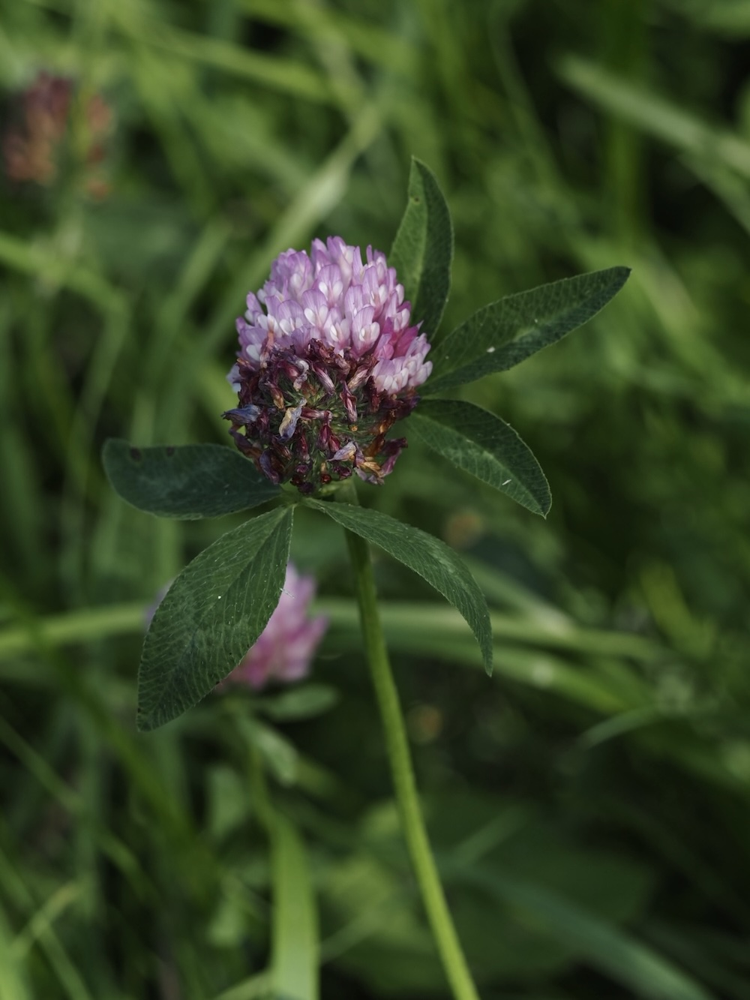
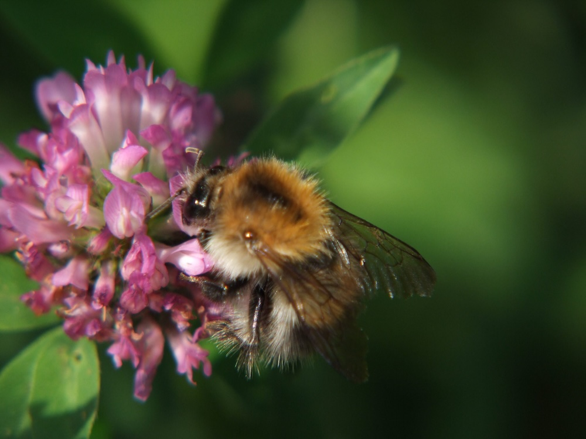

Stickstoff-Fabrik der Wurzeln
Wie alle Schmetterlingsblütler hat der Rot-Klee an seinen Wurzeln Knöllchenbakterien, die Luftstickstoff binden und für die Pflanze (und ihre Nachbarn) verfügbar machen. Genau deshalb wird Klee seit Jahrhunderten als Gründüngung angebaut: Er bereichert den Boden mit kostenlos hergestelltem Dünger. Auf einem Hektar Klee fixieren die Bakterien rund 200 kg Stickstoff pro Jahr.
Hummel-Blüte par excellence
Die langen Blütenröhren des Rot-Klees können nur von Insekten mit langem Rüssel erreicht werden — vor allem Hummeln. Honigbienen kommen mit ihrem kürzeren Rüssel meist nicht bis zum Nektar. Damit ist der Rot-Klee fast vollständig auf Hummeln als Bestäuber angewiesen: Wo Hummel-Populationen zurückgehen, bleibt die Bestäubung aus — und ohne Bestäubung keine Klee-Samen. Genau deshalb hängt der Erfolg der Klee-Saatgut-Produktion in der Landwirtschaft direkt von gesunden Hummel-Beständen ab.